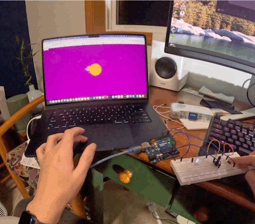

Circuit Photo

This is the circuit setup. The button and potentiometer shares a 5V power source from the Arduino. The button is connected to pin 2 and the potentiometer is connected to analog pin A0. The white LED is connected to pin 6 with a current-limiting resistor.
Circuit schematic

This image shows the circuit schematic. I used an 10kΩ resistor for the groud of the button and the potentiometer to limit the current and also to create a measurable difference for the small capacitance changes caused by touch. I used a 100Ω resistor for the LED to limit the current going through the LED. Calculation in the next section.
Calculation
For the LED current calculation, the voltage across the resistor is 5V - 3.3V = 1.8V. Therefore, the current I = 1.8V / 100Ω = 18mA, which is within the safe operating range for LEDs.
For the potentiometer, assuming a max resistance of 10kΩ, the current I = 5V / 10,000Ω = 0.5mA, which is safe for the potentiometer. Because I used an 10kΩ resistor for the ground connection of the potentiometer, the maxium reading on the analog pin A0 will be 5V * (10,000Ω / (10,000Ω + 10,000Ω)) = 2.5V, which is 522 in analog reading (0-1023 scale), since the minium reading is 1024, it offers a good range for controlling the LED brightness.
For the button, when pressed, the current I = 5V / 10kΩ = 0.5mA, which is negligible and safe for the button.
I limited the LED to 70% of its max brightness to avoid excessive battery drain for my laptop and to keep the total rotation of the arrow on 180 degrees (half circle).
Circuit operation

This GIF shows the circuit in operation. When the button is pressed, the website is activated. After moving mouse to the circle, the LED turns on and its brightness is controlled by the potentiometer.
Code Snippet Arduino:
// Assign constant to button pin, LED pin, and potentiometer pin
const int buttonPin = 2;
const int LEDPin = 6;
const int pot = A0;
void setup() {
// set up button pin as input
pinMode(buttonPin, INPUT);
// set up LED pin as output
pinMode(LEDPin, OUTPUT);
// set up potentiometer pin as input
pinMode(pot, INPUT);
// start serial communication
Serial.begin(9600);
}
void loop() {
// read button state and potentiometer value, print to serial monitor as "buttonState,potValue"
Serial.print(digitalRead(buttonPin));
Serial.print(",");
Serial.println(analogRead(pot));
// if data is available on serial port(p5 sending data)
if (Serial.available() > 0) {
// read brightness value from serial port
int brightness = Serial.read();
// sned it back to serial monitor for debugging
Serial.println(brightness);
// set LED brightness
analogWrite(LEDPin, brightness);
}
// small delay to avoid overwhelming p5.js
delay(100);
}
Code Snippet p5.js:
const BAUD_RATE = 9600; // This should match the baud rate in your Arduino sketch
let port, connectBtn; // Declare global variables
function setup() {
setupSerial(); // Run our serial setup function (below)
// Create a canvas that is the size of our browser window.
// windowWidth and windowHeight are p5 variables
createCanvas(windowWidth, windowHeight);
// p5 text settings. BOLD and CENTER are constants provided by p5.
// See the "Typography" section in the p5 reference: https://p5js.org/reference/
textFont("system-ui", 50);
textStyle(BOLD);
textAlign(CENTER, CENTER);
}
function draw() {
const portIsOpen = checkPort(); // Check whether the port is open (see checkPort function below)
if (!portIsOpen) return; // If the port is not open, exit the draw loop
let str = port.readUntil("\n"); // Read from the port until the newline
if (str.length == 0) return; // If we didn't read anything, return.
let message = str.trim().split(","); // Split the string into an array
const buttonPin = Number(message[0]); // First value is button state
const pot = Number(message[1]); // Second value is potentiometer reading
if (buttonPin === 0) { // button not pressed
background("darkcyan"); // set background color
fill("white"); // set text color
text("Press button to start", windowWidth / 2, windowHeight / 2); // display instruction
port.write(2); // send 2 to Arduino (LED off)
} else if (buttonPin === 1) { // button pressed
translate(windowWidth/2, windowHeight/2); // move origin to center
background("purple"); // set background color
fill("orange"); // set shape color
circle(0, 0, 200); // draw circle at center
let d = dist(mouseX, mouseY, width / 2, height / 2); // distance from mouse to center
let insideCircle = d < 100; // check if mouse is inside circle
if (insideCircle) { // mouse is inside circle
angleMode(DEGREES); // set angle mode to degrees
let rot = map(pot, 522, 1023, -90, 90); // map potentiometer value to rotation angle
rotate(rot); // rotate by mapped angle
fill("orange"); // set triangle color
triangle(-100, 0, 100, 0, 0, -150); // draw triangle
fill("orange"); // set circle color
circle(0, 0, 200); // redraw circle to cover triangle center
let LedBrightness = int(rot + 90); // map rotation to LED brightness (0-180)
port.write(LedBrightness); // send brightness to Arduino
}
}
}
// Three helper functions for managing the serial connection.
function setupSerial() {
port = createSerial();
// Check to see if there are any ports we have used previously
let usedPorts = usedSerialPorts();
if (usedPorts.length > 0) {
// If there are ports we've used, open the first one
port.open(usedPorts[0], BAUD_RATE);
}
// create a connect button
connectBtn = createButton("Connect to Arduino");
connectBtn.position(5, 5); // Position the button in the top left of the screen.
connectBtn.mouseClicked(onConnectButtonClicked); // When the button is clicked, run the onConnectButtonClicked function
}
function checkPort() {
if (!port.opened()) {
// If the port is not open, change button text
connectBtn.html("Connect to Arduino");
// Set background to gray
background("gray");
return false;
} else {
// Otherwise we are connected
connectBtn.html("Disconnect");
return true;
}
}
function onConnectButtonClicked() {
// When the connect button is clicked
if (!port.opened()) {
// If the port is not opened, we open it
port.open(BAUD_RATE);
} else {
// Otherwise, we close it!
port.close();
}
}
// refereced example code under button directory and class example code on servo motor
AI Usage:
Used AI agent that's built into VS code to auto complete some sentences in this website
All documentation for Assignment 6 is included above.